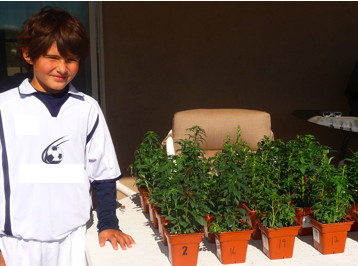
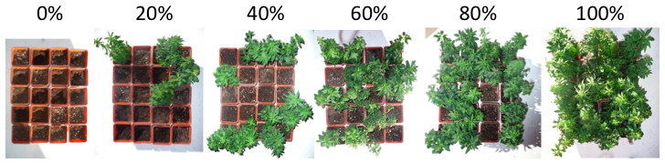
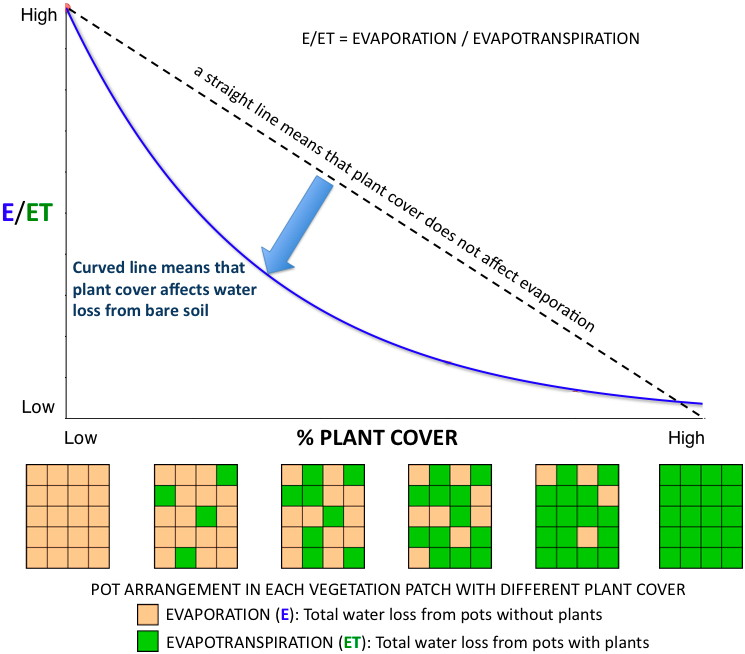

| [ HOME | About Evapotranspiration | Juan's Experiment | 5th Grade Citizen Scientist! ] |
|  | Daniel Espeleta, a fifth grader at Wilson K8 school, did a replication of the evapotranspiration experiment on a small scale for his science fair project in early 2009. This page adapts his writeup and results. This is a good example of the background concepts, procedure and results analysis of the experiment. |
Introduction |
| The cycling of water in the biosphere depends strongly on the rate of water loss to the atmosphere. Two processes control that flow: |
Evaporation is the direct loss of water from the soil to the atmosphere as water vapor and it is controlled by the water vapor deficit in the atmosphere (determined by the humidity and temperature of the air) and the water retention capacity of the soil. |
Transpiration is the loss of water by plants that happens via root water uptake from the soil, transport to the leaves and evaporation to the air. Like soil evaporation, the loss of water of transpiration depends on the environmental conditions; however, plants can actively control the rate of uptake and loss |
| It is often difficult to measure each process separately. When both water flow paths are determined together in a single process it is called Evapo-Transpiration, in order to consider both the evaporation of water directly from the soil and indirectly via the transpiration by plants. |
| Question | How do plants influence soil water loss from surrounding bare soil? |
| Hypothesis | Plants can reduce the evaporation from surrounding bare soil so that the proportion of direct water loss from the soil decreases faster than expected with increases in the percentage of plant cover. |
| Materials |
|
Procedure |
| The losses of water via evaporation and evapotranspiration were measured in vegetation patches composed of 20 pots containing plants and bare soil. A total of six patches were constructed with random pot arrangements to test 0, 20, 40, 60, 80 and 100% plant cover (pictured below). The loss of water was measure gravimetrically by the difference in weight of the pots 1-2 days after irrigation. Water loss was considered to be evaporation in pots without plants and evapotranspiration in pots with plants |
| The proportion of total water loss in each patch due to evaporation was estimated as the water loss in pots without plants (evaporation) divided by the water loss in pots with plants (evapotranspiration). |
|  |
| Pots containing plants and soil were randomly allocated in patches of different percentages of plant cover. The loss of water in each pot (evaporation in pots with soil only and evapotranspiration in pots with plants) was estimated by recording the change in weight. |
Observations |
| As percentage plant cover increased, the contribution of soil evaporation to the entire water loss in each patch decreased while the contribution of the evapotranspiration increased. |
| This response can be seen as a departure from the inear relationship, showing that small increases in vegetation cover can substantially reduce the loss of water from bare soil patches |
| The linear relationship between E/ET and plant cover implies that the evaporation from bare soil does not change with the increase in the density of plants in the landscape; however, the results from this study show that water evaporates at a slower rate from bare soil when vegetation cover gets denser. |
| Below is the curve of evaporative water loss in vegetation patches of different percentages of plant cover. Water loss is represented as the ratio of evaporation E (measure in pots without plants) to evapotranspiration ET (measured in pots with plants and soil). E/ET is represented by the Y-axis in the plot. The x-axis represents the percentage of plant cover, and directly below each percentage is a diagram representing the specific arrangement of pots with plants to pots with soil only. |
|  |
Discussion |
| As vegetation cover increases, plant transpiration accounts for most of the water loss to the atmosphere, but also plants can reduce the evaporation of water from the bare soil. |
| The mechanisms of evaporation reduction are still unknown but could include effects of plant canopies on the microclimate (the are immediately around the plants): the reduction of the vapor pressure deficit in the air by vegetation (colling and humidification effect of the plants) and greater shading of the soil (that prevents heating and desiccation). |
| The experimental design in this study limited root growth outside of the pots, so the effect of water uptake in open soil (and the effects on evaporation) were not considered, but this could be another mechanism of how plants reduce evaporation in nature. |
Conclusions |
| These results demonstrate that the role of evaporation in water loss from the landscape can be indirectly conrolled by plants. The observed reduction in evaporation indicates that plants can help avoid excessive water loss in dry habitats even under low densities. |
| One of the aspects not tested in this study is the effect of different types of soil. Because the soil medium used in the experiment had good water retention, in the future it will be important to run a similar experiment using coarser (sandier) soil with less water holding capacity, and evaluate if the results are similar. |
| Another aspect to consider in the future is to compare water loss from the patch design of the study using individual pots against a patch design with plants sharing the same soil without separation of roots. |